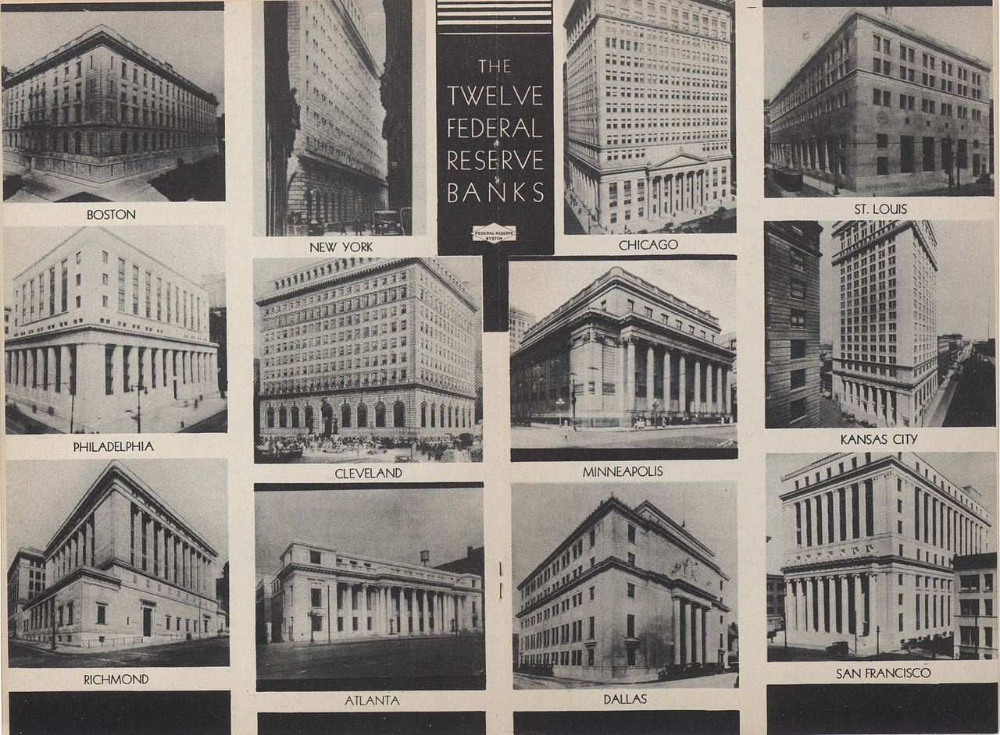
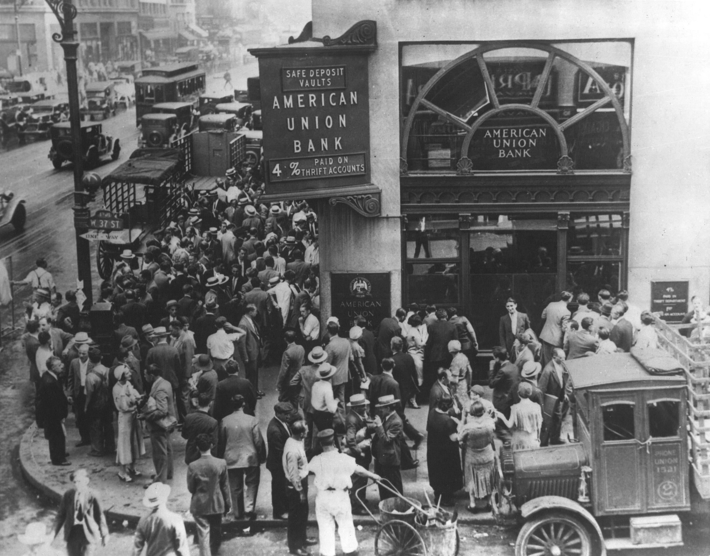
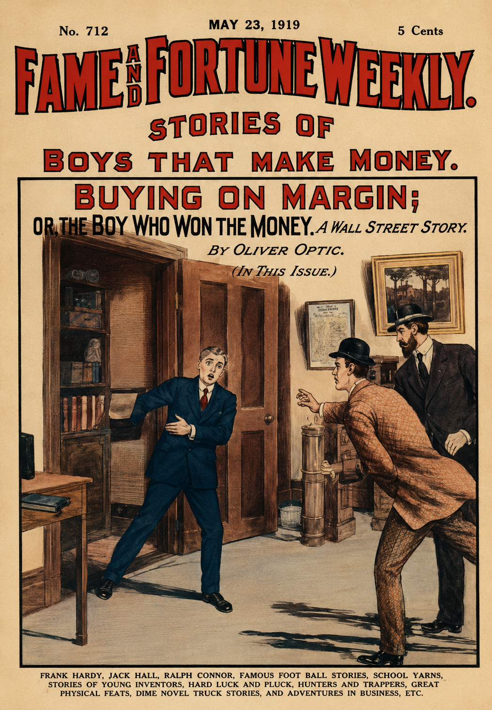
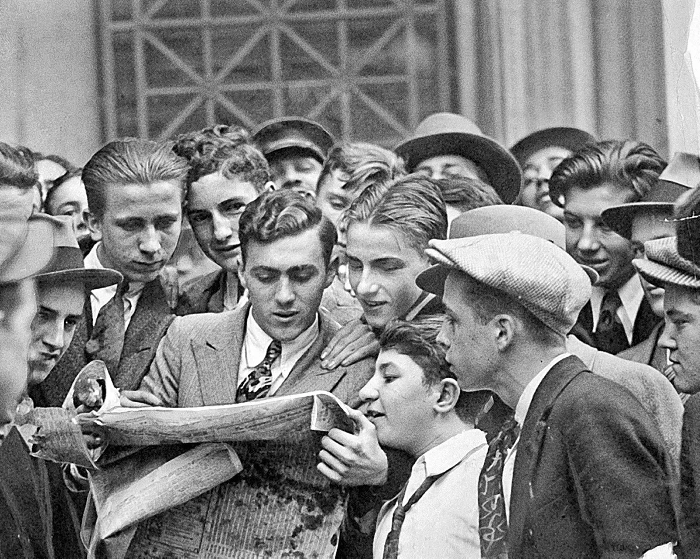
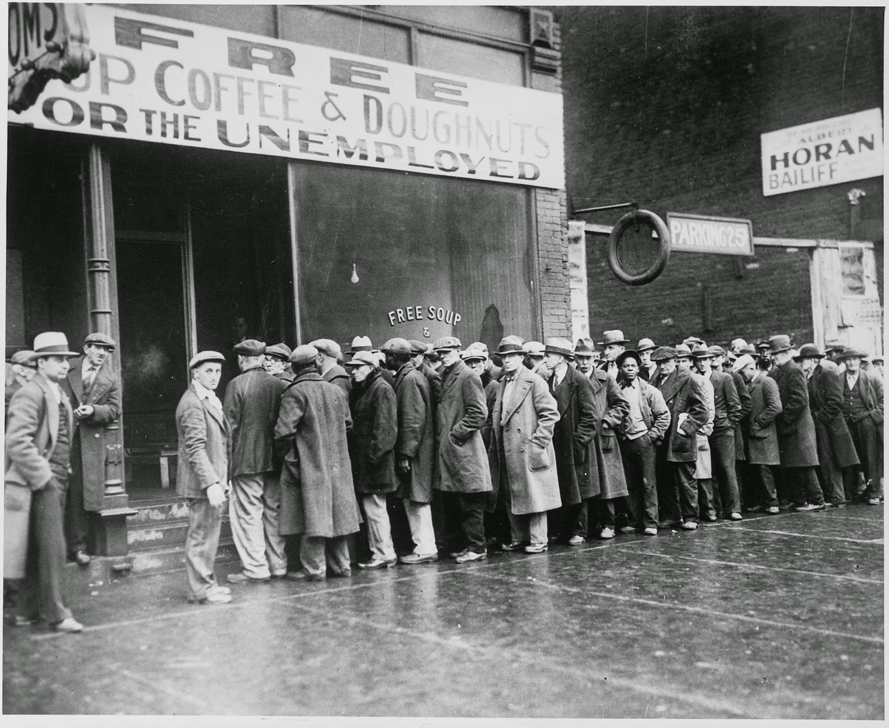
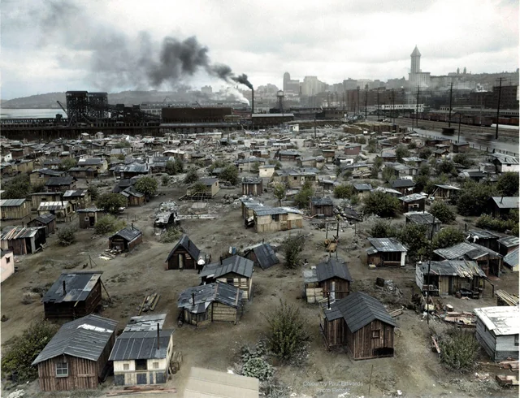
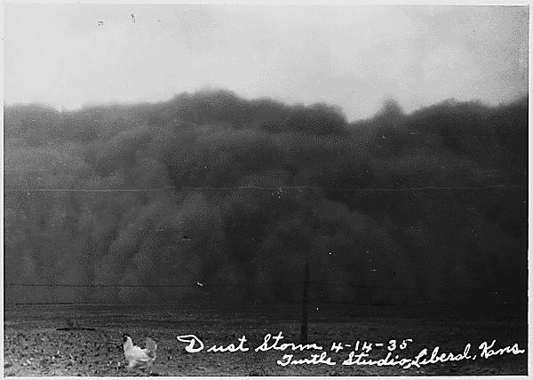
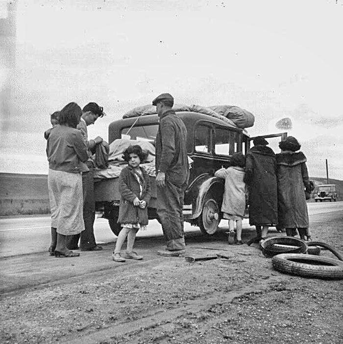
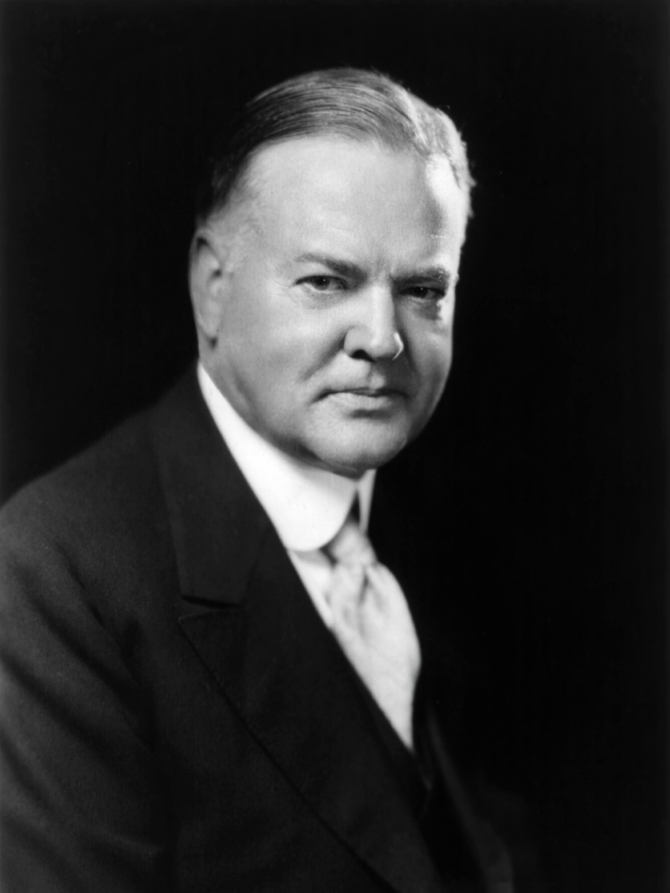

How did economic collapse devastate American families and shake faith in the system?
FROM BOOM TO COLLAPSE
1890s
MONEY PANICS
Financial instability helps convince reformers that the banking system needs stronger rules.
1913
FED CREATED
The Federal Reserve is created to manage banking, credit, and the money supply.
1920s
SPECULATION
Credit expands, factories overproduce, and many people buy stocks with borrowed money.
1929
CRASH
The stock market crash in October helps expose weaknesses throughout the economy.
1933
25% JOBLESS
Unemployment reaches about one quarter of the workforce, changing daily life for millions.
1930s
DUST BOWL
Drought and farming practices turn parts of the Great Plains into an environmental disaster zone.
WHEN THE GROUND AND THE BANK BOTH FAILED
A family standing beside a dust-covered farm could see two disasters at once. The land that was supposed to grow crops had blown away, and the economy that was supposed to reward hard work had collapsed. The Great Depression was not just a stock market story. It was a family story, a banking story, a farming story, and a political story about whether Americans could still trust the system.
A family on a dust-covered farm faced more than one disaster. Their land was failing, and the economy was failing too. The Great Depression was not just about the stock market. It was about families, banks, farms, jobs, and whether people could still trust the system.
The New York Stock Exchange became a symbol of 1920s optimism and risk. Source: Library of Congress or Wikimedia Commons.
Before the crash, many Americans believed the economy could keep expanding forever. Businesses produced more goods. Consumers bought with credit. Investors chased quick profits. But underneath the boom were weak banks, unstable money, overproduction, and debt. When the collapse came, it did not stay on Wall Street. It moved into banks, farms, factories, kitchens, and streets.
Before the crash, many Americans thought the economy would keep growing. Businesses made more goods. People bought things with credit. Investors tried to get rich quickly. But the economy had serious weaknesses. When it collapsed, the damage spread from Wall Street to banks, farms, factories, homes, and streets.
AN UNSTABLE MONEY SYSTEM
The Great Depression did not appear out of nowhere. In the 1890s and early 1900s, the United States had already experienced financial panics and debates over money. Banks could fail suddenly, credit could dry up, and ordinary people could lose savings through no fault of their own. In 1913, Congress created the Federal ReserveThe central banking system of the United States, created to help manage credit, banks, and the money supply. to make the financial system more stable. The Fed was supposed to help control monetary policyGovernment or central bank decisions about money supply, credit, and interest rates..
The Great Depression did not come from nowhere. In the 1890s and early 1900s, the United States had many money problems and bank panics. Banks could fail suddenly. People could lose their savings even if they did nothing wrong. In 1913, Congress created the Federal Reserve, or Fed, to make the banking system more stable. The Fed helped manage money, credit, and interest rates.

The Federal Reserve was created in 1913 after earlier financial panics exposed weaknesses in the banking system. Source: Library of Congress or Wikimedia Commons.
But the Federal Reserve did not prevent disaster in the early 1930s. As banks failed and prices fell, the Fed made the crisis worse by tightening credit and allowing the money supply to shrink. This helped create deflationA general fall in prices that can make debts harder to repay and businesses less willing to produce., which made debts harder to pay and pushed businesses to cut wages or close. The institution designed to stabilize the system became part of the reason many Americans lost faith in that system.
The Federal Reserve did not stop the disaster in the early 1930s. As banks failed and prices fell, the Fed tightened credit and allowed the money supply to shrink. This helped cause deflation, which means prices fell. Falling prices may sound good, but they made debts harder to pay and pushed businesses to cut wages or close. The system that was supposed to help stability made the crisis worse.
DID YOU KNOW

Bank runs made fear visible as depositors lined up to recover savings. Source: Library of Congress.
A bank did not need to be completely empty to fail. If enough frightened depositors demanded their money at the same time, the bank might not have enough cash on hand. Panic could become a self-fulfilling disaster.
THE BOOM, THE BET, AND THE CRASH
During the 1920s, many Americans saw the stock market as a path to easy wealth. SpeculationRisky investment based on the hope that prices will keep rising. grew as investors bought stocks mainly because they expected prices to rise. Some used margin buyingBuying stocks with borrowed money, hoping profits will cover the loan., which meant they purchased stocks with borrowed money. This made gains look bigger when the market rose, but it made losses much worse when prices fell.
In the 1920s, many Americans thought the stock market was an easy way to get rich. Speculation means risky investing because people think prices will keep rising. Some people used margin buying, which means buying stocks with borrowed money. This made profits look bigger when prices went up, but it made losses much worse when prices fell.

Margin buying allowed investors to use borrowed money to buy stocks, increasing both risk and potential losses. Source: Wikimedia Commons or historical archive.
The economy also suffered from overproduction and credit expansion. Factories produced more goods than many families could afford to buy. Farmers had already struggled through much of the 1920s because crop prices were low. When the stock market crashed in October 1929, it exposed weaknesses that had been building for years. The crash did not cause every part of the Depression by itself, but it shattered confidence and helped trigger a cascade of bank failuresWhen banks close because they cannot meet demands or survive losses..
The economy also had overproduction and too much credit. Factories made more goods than many families could buy. Farmers were already struggling because crop prices were low. When the stock market crashed in October 1929, it revealed problems that had been building for years. The crash did not cause every part of the Depression by itself, but it destroyed confidence and helped cause many bank failures.

Crowds outside the New York Stock Exchange after the 1929 crash showed that a financial panic had become a public crisis. Source: Wikimedia Commons.
FAST FACTS
THE COLLAPSE IN NUMBERS
1913the Federal Reserve was created to stabilize money, credit, and banking
1929the stock market crash shattered confidence in the economic boom
25%unemployment reached about one quarter of the workforce by 1933
9K+thousands of banks failed during the early years of the Depression
1930sthe Dust Bowl turned economic collapse into environmental migration
FAMILIES PAY THE PRICE
The Great Depression became real to most Americans through jobs, food, rent, and shame. By 1933, unemploymentBeing able and willing to work but unable to find a job. reached about 25 percent. Millions of people wanted work but could not find it. Men and women who had believed in hard work as the path to security suddenly found that effort alone could not protect them from economic collapse.
Most Americans experienced the Great Depression through jobs, food, rent, and shame. By 1933, unemployment reached about 25 percent. That means about one in four workers could not find a job. Many people wanted work but could not get it. Hard work alone could not protect families from collapse.

Breadlines and soup kitchens became one of the most visible signs of Depression-era hardship. Source: Wikimedia Commons or Library of Congress.
Breadlines showed hunger in public. HoovervillesShantytowns named mockingly after President Herbert Hoover. showed homelessness in public. These makeshift communities of scrap wood, tin, cardboard, and canvas were named after President Herbert Hoover because many Americans blamed him for not doing enough. The name itself was political. It turned poverty into a public accusation.
Breadlines made hunger visible. Hoovervilles made homelessness visible. Hoovervilles were shantytowns made from scrap wood, tin, cardboard, and canvas. They were named after President Herbert Hoover because many Americans blamed him for not doing enough. The name was a political insult.

Hoovervilles turned economic collapse into visible neighborhoods of survival and protest. Source: Library of Congress or Wikimedia Commons.
THE DUST BOWL MAKES DISASTER MOVE
The Dust BowlA Great Plains environmental disaster caused by drought, wind erosion, and farming practices that stripped protective grasses. made the Depression worse for farming families. Drought mattered, but it was not the only cause. Decades of unwise farming practices had stripped away native grasses that helped hold soil in place. When drought and high winds arrived, the land itself began to blow away. Dust storms darkened skies, buried equipment, entered homes, and made breathing dangerous.
The Dust Bowl made the Depression worse for farming families. Drought was part of the problem, but it was not the only cause. Farmers had removed native grasses that held soil in place. When drought and strong winds came, the soil blew away. Dust storms darkened the sky, buried tools, entered homes, and made breathing hard.

Dust storms showed how environmental damage and economic crisis could combine into one disaster. Source: Library of Congress.
Many families from Oklahoma, Texas, Arkansas, and nearby states left for California. They were often called OkiesA nickname, often used insultingly, for migrants from Oklahoma and nearby Dust Bowl states., even when they came from other states. They packed cars with bedding, tools, children, and whatever they could save. The road west became a symbol of hope, but California did not always welcome them. Migrants often found low wages, crowded camps, and discrimination.
Many families from Oklahoma, Texas, Arkansas, and nearby states went west to California. People often called them Okies, even when they came from other states. They packed cars with bedding, tools, children, and anything they could save. The road west meant hope, but California did not always welcome them. Many migrants faced low pay, crowded camps, and discrimination.

For many Dust Bowl families, migration west was both an act of survival and a sign that home had become impossible. Source: Library of Congress.
ART SPOTLIGHTMigrant Mother : Dorothea Lange, Nipomo, California, 1936.
Lange photographed Florence Owens Thompson and her children while documenting migrant labor conditions for the federal government.
Lange's photograph became famous because it turned a national economic crisis into one mother's face. It did not show the entire Depression, but it made poverty harder for Americans to ignore.
HOOVER AND THE LIMITS OF OLD ANSWERS
President Herbert Hoover did not ignore the Depression, but his response was shaped by older ideas about government and relief. Hoover believed strongly in local aid, private charity, business cooperation, and individual responsibility. He feared that direct federal relief would weaken character and create dependence. For many desperate families, this sounded cruel or disconnected from reality.
President Herbert Hoover did respond to the Depression, but his ideas were limited. He believed help should mostly come from local groups, charities, businesses, and individuals. He worried that direct federal relief would make people dependent. To families with no work or food, this sounded cold and unrealistic.

Hoover's ideas about limited federal relief became politically damaging as the Depression deepened. Source: Library of Congress.
Hoover's refusal to provide direct federal relief destroyed his presidency because the crisis seemed too large for old solutions. Americans saw banks fail, jobs disappear, farms blow away, and breadlines grow. Many concluded that the federal government had to do more than encourage confidence. The Depression shook faith not only in the economy, but in the idea that the system would naturally correct itself if people simply waited.
Hoover's refusal to give direct federal relief hurt his presidency. The crisis was too big for old solutions. Americans saw banks fail, jobs disappear, farms blow away, and breadlines grow. Many people decided the federal government had to do more. The Depression made people question whether the system would fix itself.
PRIMARY SOURCE MOMENT
Franklin D. Roosevelt delivered his First Inaugural Address at the U.S. Capitol on March 4, 1933. Source: Library of Congress or National Archives.
PRIMARY SOURCE
“So, first of all, let me assert my firm belief that the only thing we have to fear is fear itself--nameless, unreasoning, unjustified terror which paralyzes needed efforts to convert retreat into advance. In every dark hour of our national life a leadership of frankness and vigor has met with that understanding and support of the people themselves which is essential to victory. I am convinced that you will again give that support to leadership in these critical days.”
Franklin D. Roosevelt, First Inaugural Address, 1933.
Roosevelt spoke when banks were failing, unemployment was enormous, and many Americans no longer trusted the economy to repair itself. His words tried to turn panic into public confidence and argued that strong national leadership was necessary in a national emergency.
IN SIMPLE TERMS: Roosevelt told Americans that fear itself was making the crisis worse. He asked people to support bold government action during the emergency.
THEN AND NOW
THE DEPRESSION CHANGED WHAT AMERICANS EXPECTED GOVERNMENT TO PROTECT.
1930S
Bank closures and emergency banking actions showed how deeply the Depression shook trust in financial institutions. Source: Library of Congress or Chronicling America.
NOW
Modern deposit insurance reflects lessons Americans learned from mass bank failures during the Depression. Source: Wikimedia Commons.
THEN
During the Depression, millions of Americans saw savings disappear, jobs vanish, and homes become unstable. The crisis made many people question whether banks, businesses, and government leaders could protect ordinary families.
NOW
Today, systems such as deposit insurance, central bank policy, unemployment support, and farm conservation programs reflect lessons from the Depression. These systems do not prevent every crisis, but they show that Americans came to expect more protection from economic collapse.
CONNECTION
The Great Depression mattered because it changed the relationship between people, markets, and government. It made many Americans believe that a system that could fail so badly needed stronger public responsibility.
When an economic system collapses, who should be responsible for helping families survive?